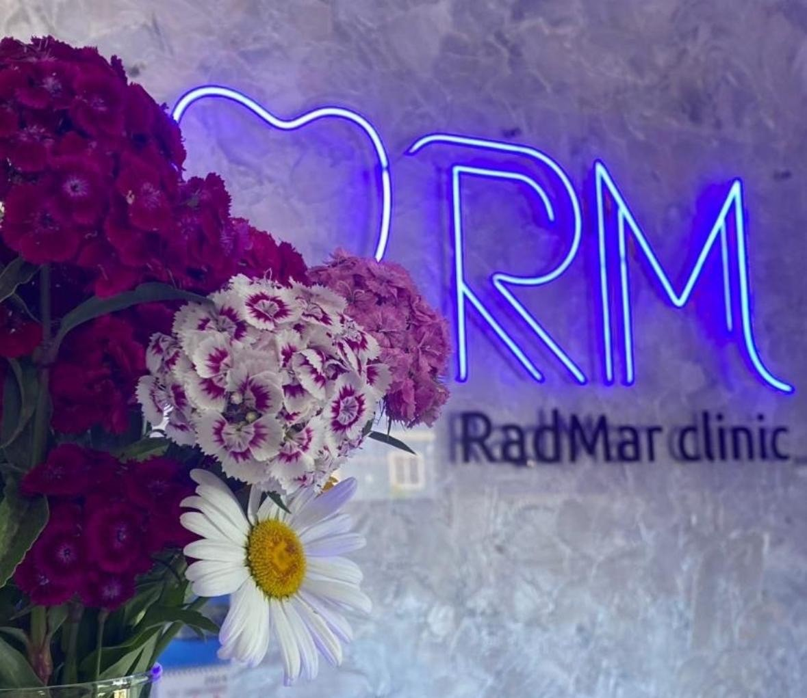

Стоматология «РАДМАР»
терапия
ортопедия
хирургия
ООО «РАДМАР». Адрес: Астраханская обл., Приволжский район, с. Карагали, ул. Паромная, д. 5.
Тел.: +7 (908) 614‑13‑23 · Почта: rad-mar@bk.ru
Лицензия: Л041‑01153‑30/00319289 от 19.02.2018. Лицензирующий орган: Минздрав Астраханской области. Срок: бессрочно.
Программа государственных гарантий Астраханской области на 2026 год — скачать (PDF)

Имеются противопоказания, необходима консультация специалиста. Реклама медицинских услуг размещена с указанием номера лицензии.
Врачи
Курбанов Ризабек Хайдарович
врач высшей категории · стоматолог‑ортопед

Образование
В 1992 г окончил Ставропольский государственный медицинский институт по специальности – Стоматология
Стаж работы
33 года, с 1992 г
Специализация
Врач-стоматолог-ортопед высшей категории
Сведения об аккредитации специалиста
Текст об аккредитации будет добавлен позже.
Курбанов Радик Ризабекович
стоматолог‑ортопед

Образование
В 2015 г окончил Астраханский государственный медицинский университет по специальности – Стоматология
Стаж работы
с 2017 г
Специализация
Врач-стоматолог-ортопед
Сведения об аккредитации специалиста
Текст об аккредитации будет добавлен позже.
Курбанов Марсель Ризабекович
стоматолог‑ортопед

Образование
В 2020 г окончил Астраханскую государственную медицинскую академию по специальности – Стоматология
Стаж работы
с 2021 г
Специализация
Врач-стоматолог-ортопед
Сведения об аккредитации специалиста
Текст об аккредитации будет добавлен позже.
Алиев Муслим Махмудович
стоматолог-терапевт

Образование
В 2019 г окончил Пензенский государственный университет по специальности- Стоматология
Стаж работы
с 2020 г
Специализация
Врач-стоматолог
Сведения об аккредитации специалиста
Текст об аккредитации будет добавлен позже.
Джалмухамбетов Ерлан Гимранович
стоматолог‑терапевт

Образование
В 2020 г окончил Астраханскую государственную медицинскую академию по специальности – Стоматология
Стаж работы
с 2021 г
Специализация
Врач-стоматолог-терапевт
Сведения об аккредитации специалиста
Текст об аккредитации будет добавлен позже.
Подробная информация о врачах — скачать (DOCX)
Прейскурант стоматологических услуг
По вашему запросу ничего не найдено.
Стоматология терапевтическая
| Код услуги | № | Наименование услуги | Ед. изм. | Цена, руб. |
|---|---|---|---|---|
| В01.065.001 | Т-1 | Прием (осмотр, консультация) врача-стоматолога-терапевта первичная | 1 пос. | 500 |
| В.01.065.002 | Т-2 | Прием (осмотр, консультация) врача-стоматолога-терапевта повторный | 1 пос. | 200 |
| В01.066.001 | Т-3 | Прием (осмотр, консультация) врача-стоматолога-ортопеда первичная | 1 пос. | 500 |
| В01.066.002 | Т-4 | Прием (осмотр, консультация) врача-стоматолога-ортопеда повторный | 1 пос. | 150 |
| В01.067.001 | Т-5 | Прием (осмотр, консультация) врача-стоматолога-хирурга первичная | 1 пос. | 500 |
| В01.067.002 | Т-6 | Прием (осмотр, консультация) врача-стоматолога-терапевта повторный | 1 пос. | 150 |
| В04.065.006 | Т-6 (1) | Профилактический прием (осмотр, выдача справки) | 1 пос. | 300 |
| Рентгенология | ||||
| А06.07.003 | Т-7 | Прицельная внутриротовая контактная рентгенография | 1 зуб | 300 |
| Анестезия, инъекции, наркоз | ||||
| В01.003.004.002 | Т-8 | Проводниковая анестезия | 1 шт. | 600 |
| В01.003.004.004 | Т-9 | Аппликационная анестезия | 1 шт. | 100 |
| В01.003.004.005 | Т-10 | Инфильтрационная анестезия | 1 шт. | 500 |
| Профилактика | ||||
| А11.07.022 | Т-11 | Аппликация лекарственного препарата на слизистую оболочку полости рта | 1 пос. | 100 |
| А11.07.07.014 | Т-12 | Местное применение реминерализующих препаратов в области зуба | 1 зуб | 150 |
| А11.07.012 | Т-13 | Глубокое фторирование эмали зуба | 1 зуб | 200 |
| А22.07.002 | Т-14 | Ультразвуковое удаление наддесневых и поддесневых зубных отложений в области зуба | 2 челюсти | 3500 |
| А16.07.057 | Т-15 | Запечатывание фиссуры зуба герметиком | 1 зуб | 1000 |
| Терапевтические услуги | ||||
| А16.07.082 | Т-16 | Лечение кариеса | 1 зуб | 1400 |
| — | Т-16(1) | Лечение глубокого кариеса | 1 зуб | 2000 |
| А16.07.008 | Т-17 | Эндодонтическое лечение одного канала | 1 зуб | 2000 |
| А16.07.008/01 | Т-18 | Эндодонтическое лечение двух каналов | 1 зуб | 2200 |
| А16.07.008/02 | Т-19 | Эндодонтическое лечение трех каналов | 1 зуб | 2500 |
| А16.07.008/03 | Т-20 | Эндодонтическое лечение одного канала повышенной сложности | 1 зуб | 2100 |
| А16.07.008/04 | Т-21 | Эндодонтическое лечение двух каналов повышенной сложности | 1 зуб | 2400 |
| А16.07.008/05 | Т-22 | Эндодонтическое лечение трех каналов повышенной сложности | 1 зуб | 2700 |
| А16.07.083.001 | Т-24 | Пломбирование каналов временной пастой типа Каласепт/Метапекс | 1 зуб | 700 |
| А16.07.008/06 | Т-25 | Пломбировочный материал для каналов «Гуттасилер» | 1 зуб | 400 |
| А16.07.008/07 | Т-26 | Пломбировочный материал для каналов «Гранулотек» | 1 зуб | 1000 |
| А16.07.008/08 | Т-27 | Пломбировочный материал для каналов «Пульподент» | 1 зуб | 500 |
| А16.07.008/09 | Т-28 | Установка термафила в одном канале | 1 канал | 600 |
| А16.07.008/002 | Т-29 | Установка гуттаперчевого штифта в одном канале | 1 канал | 700 |
| А11.07.010 | Т-30 | Наложение мышьяковистой пасты | 1 зуб | 300 |
| А16.07.098 | Т-31 | Снятие пломбы | 1 зуб | 200 |
| А16.07.025 | Т-32 | Избирательное полирование зуба | 1 зуб | 100 |
| А16.07.031 | Т-33 | Восстановление зуба пломбировочным материалом с использованием анкерных штифтов | 1 зуб | 500 |
| А16.07.092 | Т-34 | Трепанация зуба, искусственной коронки | 1 зуб | 500 |
| А16.07.002.022 | Т-35 | Полировка пломбы из композита при лечении кариозных полостей по Блеку | 1 зуб | 300 |
| А16.07.010.001 | Т-36 | Оказание помощи при острой зубной боли | 1 зуб | 500 |
| А22.07.002 | Т-37 | Ультразвуковое удаление наддесневых и поддесневых зубных отложений | 1 зуб | 150 |
| Распломбирование корневых каналов | ||||
| А16.07.030 | Т-38 | Распломбирование одного канала | 1 зуб | 600 |
| А16.07.030/01 | Т-39 | Распломбирование двух каналов | 1 зуб | 700 |
| А16.07.030/02 | Т-40 | Распломбирование трех каналов | 1 зуб | 800 |
| А16.07.030/03 | Т-41 | Извлечение фиксированного инородного тела из корневого канала | 1 зуб | 1000 |
| А16.07.082.002 | Т-42 | Распломбирование одного канала повышенной сложности (резорцин-формалиновый способ) | 1 зуб | 1300 |
| А16.07.082.001 | Т-43 | Распломбирование одного канала повышенной сложности (пломбированного цементом) | 1 зуб | 1500 |
| Пломбы химического отверждения | ||||
| А16.07.002 | Т-44 | Установка пломбы химического отверждения | 1 зуб | 600 |
| Пломбы светового отверждения | ||||
| А16.07.002.001 | Т-45 | Установка светоотверждаемой пломбы «EsteLait Flow» | 1 зуб | 300 |
| А16.07.002.002 | Т-46 | Установка светоотверждаемой пломбы «Harmonize» | 1 зуб | 1700 |
| А16.07.002.003 | Т-47 | Установка светоотверждаемой пломбы «Estelite Asterua» | 1 зуб | 2000 |
| А16.07.002.004 | Т-48 | Установка светоотверждаемой пломбы «Estelite Sigma Quick» | 1 зуб | 2000 |
| А16.07.002.005 | Т-49 | Установка штифта на материал «Core it» | 1 зуб | 200 |
| А16.07.002.006 | Т-50 | Установка светоотверждаемой пломбы «Vitremer» | 1 зуб | 1100 |
| Прокладочные материалы | ||||
| А11.07.012.001 | Т-51 | Постановка стеклоиономерного прокладочного материала «Fuji 9» | 1 зуб | 500 |
| А11.07.012.002 | Т-52 | Постановка стеклоиономерного прокладочного материала «Витремер», «Витрибонд» | 1 зуб | 600 |
| А11.07.012.003 | Т-53 | Введение кальцийсодержащего материала «Дайкал» | 1 зуб | 400 |
| А16.07.052 | Т-54 | Установка расширителя рта | 1 шт. | 200 |
| А16.07.052.01 | Т-55 | Установка стекловолоконного штифта | 1 шт. | 1000 |
| А11.07.012.004 | Т-56 | Наложение коффердама, руббердама | 1 шт. | 600 |
Стоматология ортопедическая
| Код услуги | № | Наименование услуги | Ед. изм. | Цена, руб. |
|---|---|---|---|---|
| А16.07.004/01 | Орт-001 | Временная коронка (непрямой метод) | 1 зуб | 1500 |
| А16.07.004/02 | Орт-002 | Временная коронка (PMMA) | 1 зуб | 2500 |
| А16.07.004/03 | Орт-003 | Коронка металлическая цельнолитая | 1 зуб | 5000 |
| А16.07.004/04 | Орт-004 | Коронка металлокерамическая | 1 зуб | 9000 |
| А16.07.004/05 | Орт-005 | Коронка из диоксида циркония | 1 зуб | 15000 |
| А16.07.004/06 | Орт-006 | Коронка стальная штампованная без напыления | 1 зуб | 3000 |
| А16.07.004/07 | Орт-007 | Коронка цельнолитая с пластмассовой облицовкой | 1 зуб | 5000 |
| А16.07.004/08 | Орт-008 | Коронка штампованная с облицовкой | 1 зуб | 3500 |
| А16.07.004/09 | Орт-009 | Коронка стальная штампованная с напылением | 1 зуб | 3000 |
| А16.07.004/10 | Орт-010 | Фасетка пластмассовая | 1 зуб | 3000 |
| А16.07.004/11 | Орт-011 | Разрез коронок (пластмассовой/штампованной) | 1 зуб | 300 |
| А16.07.004/12 | Орт-012 | Разрез коронок (цельнолитой/металлокерамической) | 1 зуб | 500 |
| А16.07.004/13 | Орт-013 | Изготовление зуба литого | 1 зуб | 3000 |
| А16.07.004/14 | Орт-014 | Коронка из драгметалла (без учета металла) | 1 зуб | 3200 |
| А16.07.004/15 | Орт-015 | Коронка цельнолитая с керамической облицовкой | 1 зуб | 5000 |
| А16.07.004/16 | Орт-016 | Коронка металлокерамическая на имплантат (цементная фиксация) | 1 зуб | 20000 |
| А.16.07.006 | Орт-017 | Коронка из диоксида циркония на имплантат (винтовая фиксация) | 1 зуб | 25000 |
| Фиксация на постоянный цемент | ||||
| А16.07.049/01 | Орт-018 | Временная фиксация коронок | 1 зуб | 300 |
| А16.07.049/02 | Орт-019 | Постоянная фиксация коронок на СИЦ FUDJI + | 1 зуб | 800 |
| А16.07.049/03 | Орт-020 | Постоянная фиксация коронок на СИЦ FUDJI 1 | 1 зуб | 700 |
| А16.07.049/04 | Орт-021 | Постоянная фиксация фосфат-цементом (Унифас) | 1 зуб | 300 |
| Восстановление зуба вкладкой | ||||
| А16.07.003/01 | Орт-022 | Штифтово-культевая конструкция однокорневая (прямой метод) | 1 зуб | 2500 |
| А16.07.003/02 | Орт-023 | Штифтово-культевая конструкция однокорневая (лабораторный метод) | 1 зуб | 3200 |
| А16.07.003/03 | Орт-024 | Штифтово-культевая конструкция двухкорневая (лабораторный метод) | 1 зуб | 3500 |
| Съемные протезы | ||||
| А16.07.035/01 | Орт-025 | Частичный съемный пластиночный протез из акрила | 1 челюсть | 15000 |
| А16.07.035/02 | Орт-026 | Починка съемного протеза | 1 шт. | 2500 |
| А16.07.035/03 | Орт-027 | Починка протеза повышенной сложности | 1 шт. | 3000 |
| А16.07.035/04 | Орт-028 | Приварка зуба, кламмера (одного) | 1 зуб | 1600 |
| А16.07.035/05 | Орт-029 | Микропротез (иммедиат-протез) | 1 шт. | 4000 |
| А16.07.035/06 | Орт-030 | Перебазировка протеза (непрямой метод) | 1 челюсть | 2000 |
| А16.07.035/07 | Орт-031 | Отливка рабочей модели | 1 челюсть | 500 |
| А23.030.050.001 | Орт-032 | Коррекция ортопедической конструкции (съемного протеза) | 1 челюсть | 300 |
| А16.07.035/08 | Орт-033 | Армирование съемного протеза (армирующая сетка / литая дуга) | 1 челюсть | 3000 |
| А16.07.035/09 | Орт-034 | Микропротез (ацеталовый) | 1 шт. | 5000 |
| Диагностика | ||||
| А02.07.010/01 | Орт-035 | Изготовление диагностической модели | — | 500 |
| А02.07.006 | Орт-036 | Определение прикуса | — | 200 |
| А02.07.010/02 | Орт-037 | Получение оттиска альгинатным материалом | — | 500 |
| А02.07.010/03 | Орт-038 | Получение оттиска А-силиконом | — | 1500 |
| А02.07.010/04 | Орт-039 | Получение оттиска С-силиконом | — | 800 |
| А23.07.020 | Орт-040 | Изготовление боксерской каппы | — | 6000 |
| Полные съемные протезы | ||||
| А.16.07.023.001 | Орт-041 | Полный съемный пластиночный протез из акрила | 1 челюсть | 20000 |
| А16.07.006 | Орт-042 | Изготовление индивидуальной ложки | 1 челюсть | 1500 |
| Бюгельные протезы | ||||
| А16.07.036.001 | Орт-043 | Бюгельный протез металлический на кламмерной фиксации | 1 челюсть | 25000 |
| А16.07.036.002 | Орт-044 | Бюгельный протез на аттачменах (микрозамках) | 1 челюсть | 45000 |
| А16.07.036.003 | Орт-045 | Бюгельный протез на телескопических коронках | 1 челюсть | 70000 |
| А16.07.036.004 | Орт-046 | Коронки телескопические первичные и вторичные | 1 зуб | 10000 |
| А16.07.036.004 | Орт-047 | Бюгельный протез с одним МК-замком | 1 челюсть | 23000 |
| А16.07.036.005 | Орт-048 | Бюгельный протез с двумя МК-замками | 1 челюсть | 25000 |
| А16.07.036.006 | Орт-049 | Замена матрицы на аттачменах (микрозамках) | 1 шт. | 3000 |
| А16.07.036.007 | Орт-050 | Ацеталовый бюгельный протез | 1 челюсть | 30000 |
| А16.07.036.008 | Орт-051 | Изготовление накладки окклюзионной (лапки) | 1 шт. | 500 |
| А16.07.036.019 | Орт-052 | Спайка деталей, 1 пайка | 1 шт. | 500 |
| А16.07.035.4015 | Орт-053 | Акриловый протез, система All-on-4 | 1 ед. | 150000 |
| A16.07.056.014 | Орт-054 | Акриловый протез, система All-on-6 | 1 ед. | 170000 |
| А16.07.006.15 | Орт-055 | Диоксид циркония на титановой балке, на 4 | 1 ед. | 200000 |
| А16.07.006.18 | Орт-056 | Диоксид циркония на титановой балке, на 6 | 1 ед. | 250000 |
Хирургический прием
| Код услуги | № | Наименование услуги | Ед. изм. | Цена, руб. |
|---|---|---|---|---|
| А16.07.001.001 | Хр.01 | Удаление постоянного зуба (части зуба) | 1 зуб | 800 |
| А16.07.001.002 | Хр.02 | Удаление постоянного зуба | 1 зуб | 1500 |
| А16.07.054 | Хр.03 | Внутрикостная дентальная имплантация «ANYONE» (Корея) | 1 ед. | 30000 |
| А16.07.054.009 | Хр.04 | Установка формирователя десны | 1 ед. | 2500 |
| А16.07.097.002 | Хр.05 | Наложение швов | 1 ед. | 500 |
| А16.07.055 | Хр.06 | Синус-лифтинг закрытый (костная пластика, остеопластика) | 1 ед. | 20000 |
| А16.07.055 | Хр.07 | Синус-лифтинг открытый (костная пластика, остеопластика) | 1 ед. | 80000 |
| A16.07.044.003 | Хр.08 | Пластика десны | 1 ед. | 10000 |
| A16.07.006.007 | Хр.09 | Установка мультиюнита | 1 ед. | 6500 |
| A16.07.054.030 | Хр.10 | Внутрикостная дентальная имплантация по концепции «Все на 4» | 1 ед. | 150000 |
| A16.07.054.031 | Хр.11 | Внутрикостная дентальная имплантация по концепции «Все на 6» | 1 ед. | 220000 |
| А16.07.017.011 | Хр.12 | Костная аугментация | 1 ед. | 20000 |
Ортодонтия
| Код услуги | № | Наименование услуги | Ед. изм. | Цена, руб. |
|---|---|---|---|---|
| В01.063.001 | Орд-01 | Консультация врача-ортодонта | — | 900 |
| — | Орд-02 | Установка брекет-системы | 2 челюсти | 75000 |
| А23.07.001 | Орд-03 | Снятие брекет-системы с чисткой | 2 челюсти | 4000 |
| А16.07.048.001 | Орд-04 | Установка металлической лигатуры | 1 ед. | 250 |
| А16.07.028.006 | Орд-05 | Установка ретейнера | 1 ед. | 3500 |
| А23.07.001.014 | Орд-06 | Установка эластичной цепочки | 1 ед. | 450 |
| А23.07.001.022 | Орд-07 | Вторичная фиксация брекета | 1 ед. | 1200 |
| А23.07.001.017 | Орд-08 | Фиксация кнопки | 1 ед. | 800 |
| А16.07.028 | Орд-09 | Установка расправляющей пружины | 1 ед. | 400 |
| А23.07.001.006 | Орд-10 | Замена дуги (TMA) | 1 ед. | 3500 |
| А23.07.001.005 | Орд-11 | Замена дуги (CuNiTi) | 1 ед. | 1750 |
Лицензия и виды деятельности
Лицензия на медицинскую деятельность № Л041‑01153‑30/00319289 от 19.02.2018, выдана Министерством здравоохранения Астраханской области. Срок действия: бессрочно. Место осуществления деятельности: Астраханская обл., Приволжский район, с. Карагали, ул. Паромная, д. 5.
Виды помощи по приложению к лицензии: первичная доврачебная, врачебная и специализированная медико‑санитарная помощь в амбулаторных условиях; стоматология терапевтическая, ортопедическая, хирургическая.
Скачать выписку из реестра лицензий (PDF) · Лицензия на осуществление медицинской деятельности
Документы
- Приказ о порядке приёма и рассмотрения обращений граждан — скачать (PDF)
- Положение о предоставлении платных медицинских услуг — скачать (PDF)
- Формы информированных согласий — в составе Положения (PDF)
- Реквизиты организации — скачать (DOCX)
- Контакты — скачать (DOCX)
- О врачах — скачать (DOCX)
- Сведения о контролирующих организациях — скачать (DOCX)
Пациенту
Права и обязанности пациента
Кратко: право на информацию, выбор врача, информированное согласие, соблюдение режима и др.
#TODO опубликовать полный текстПравила записи и подготовки
- Запись по телефону, через форму на сайте или в регистратуре.
- Подготовка к исследованиям и оперативным вмешательствам — #TODO добавить инструкции
Платные услуги и договор
Способы оплаты: #TODO указать (наличные/карта/онлайн‑оплата). Сроки ожидания: #TODO. Льготы: #TODO (если есть).
#TODO Скачать образец договора
Дистанционный договор через сайт возможен при идентификации пациента и согласии с условиями. Требуется электронная подпись/подтверждение акцепта. #TODO интеграция оплаты/ЕСИА при необходимости.
Политика обработки персональных данных
Оператор: ООО «РАДМАР», ОГРН 1073019001186, ИНН/КПП 3009015215/300901001, адрес: Астраханская обл., Приволжский район, с. Карагали, ул. Паромная, д. 5.
Цели обработки: организация записи на приём, обработка обращений и отзывов, заключение и исполнение договоров на оказание медицинских услуг.
Перечень ПДн: ФИО, контактный телефон, e‑mail, сведения из обращений. Медицинская информация через сайт не запрашивается.
Правовые основания: ст. 6, 9 152‑ФЗ, Правила оказания платных медуслуг, договор на оказание услуг. #TODO указать локальные акты/приказы
Сроки хранения: в течение сроков, необходимых для целей обработки и установленных законодательством. #TODO конкретизировать сроки
Права субъекта ПДн: доступ, уточнение, блокирование, удаление; отзыв согласия; направление запросов на rad-mar@bk.ru.
Политика обработки персональных данных: скачать (DOCX)
Общее положение о персональных данных: скачать (DOCX)
Перечни лекарственных средств
- ЖНВЛП — #TODO ссылка
- Перечни по распоряжению Правительства № 2406‑р — #TODO ссылка
- Льготные по Постановлению № 890 — #TODO ссылка
Контакты
Адрес: Астраханская обл., Приволжский район, с. Карагали, ул. Паромная, д. 5
Телефон: +7 (908) 614‑13‑23 · E‑mail: rad-mar@bk.ru
Контролирующие органы: #TODO добавить контакты территориального Росздравнадзора, Роспотребнадзора, регионального минздрава